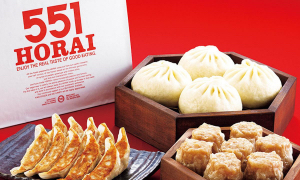

Osaka TO GO
美味しい大阪をお持ち帰り！
TO GO とは？
美味しいお土産を買うことを目的に旅する新しいスタイル「TO GO」
今日の特集は天下の台所、大阪。
大阪へと旅をして、TO GOのオススメする美味しいお土産を是非、お持ち帰りしてみてください！
Access

東京から大阪までは東海道新幹線で、約2時間30分の旅路です。それ以外のアクセスでは、成田空港から関西空港まで1時間のフライトの後に、市内までは電車で1時間の移動。やはり新幹線がオススメです。
TO GO
大阪でお持ち帰りしたい、オススメのお土産はなんといっても「５５１（ゴーゴーイチ）」です！大阪ローカルの老舗中華屋で、味は絶品！特に蓬莱と言われる肉まんは、一度食べると他のものが食べられません！